採用済み6対象・320枚の透過PNG。右へ移動→停止→左へ移動→停止を、原寸と3倍で比較します。
このページはオフライン合成です。ゲームへの取り込み・隔離描画検証は未実施です。
e5eadbc4f316b0746257a74322f2bea5dd1bfabe
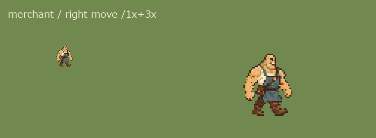
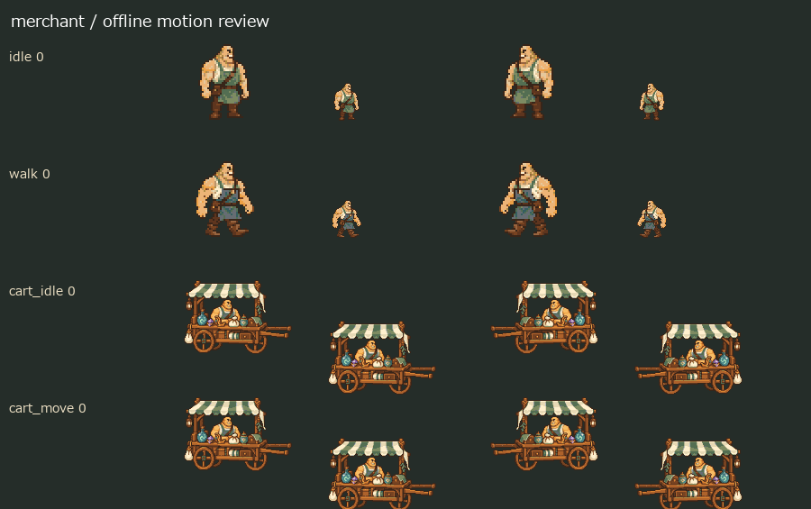
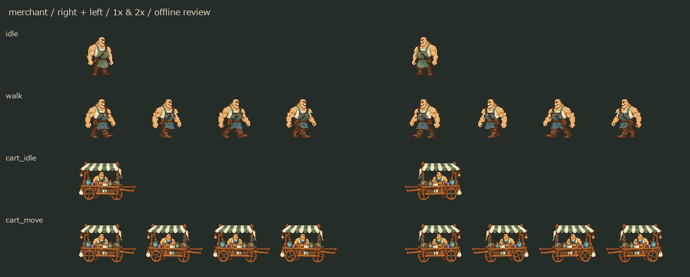
88eff06228805249f4a973fa1e6314525a3f785d
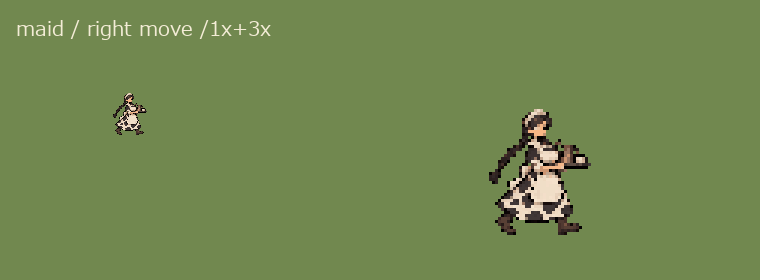
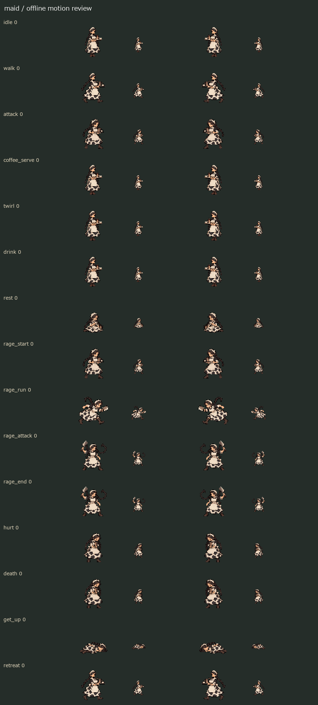
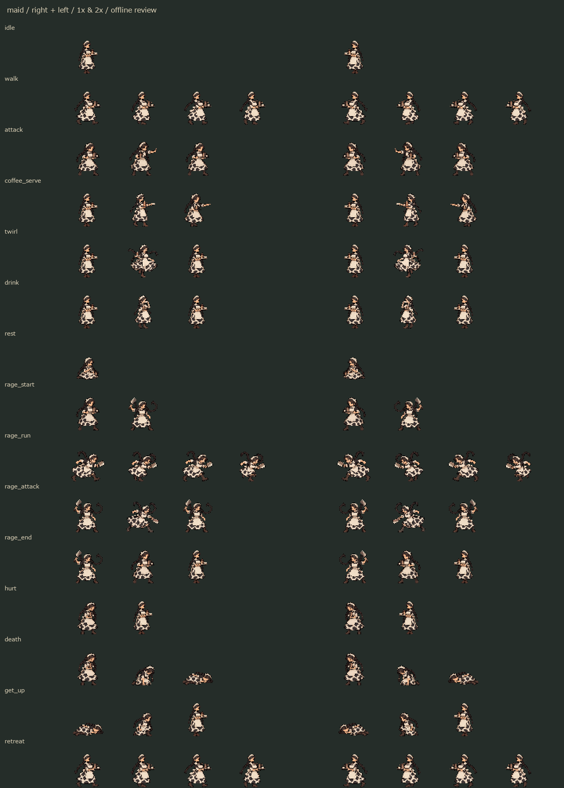
cde30569d077344227b515c53736560952fadd03
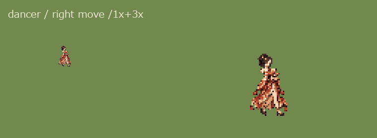
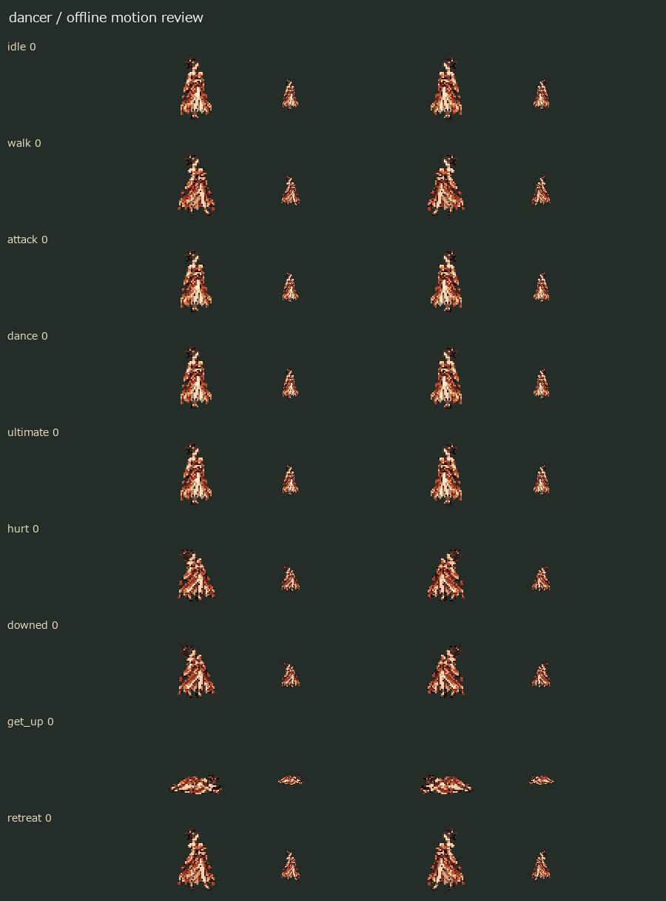
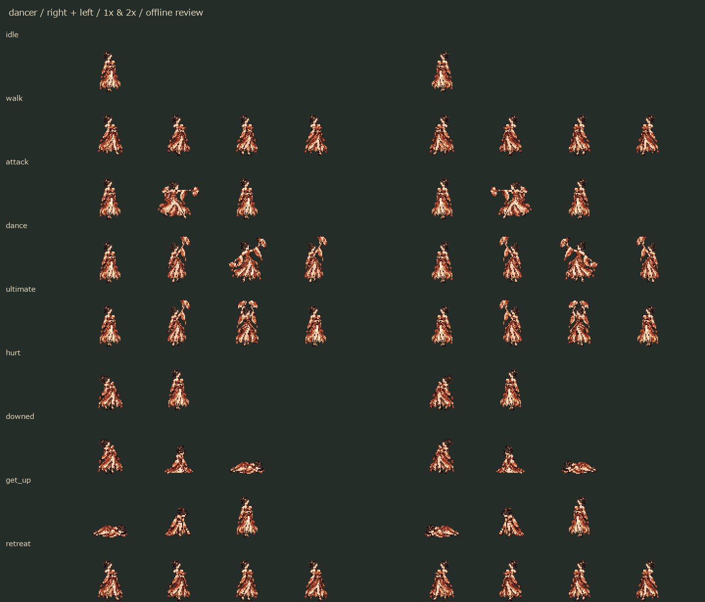
54c98a6daa268926698039fa48853d9e9009985b
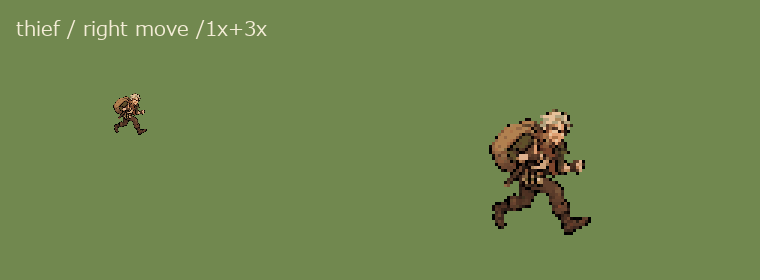
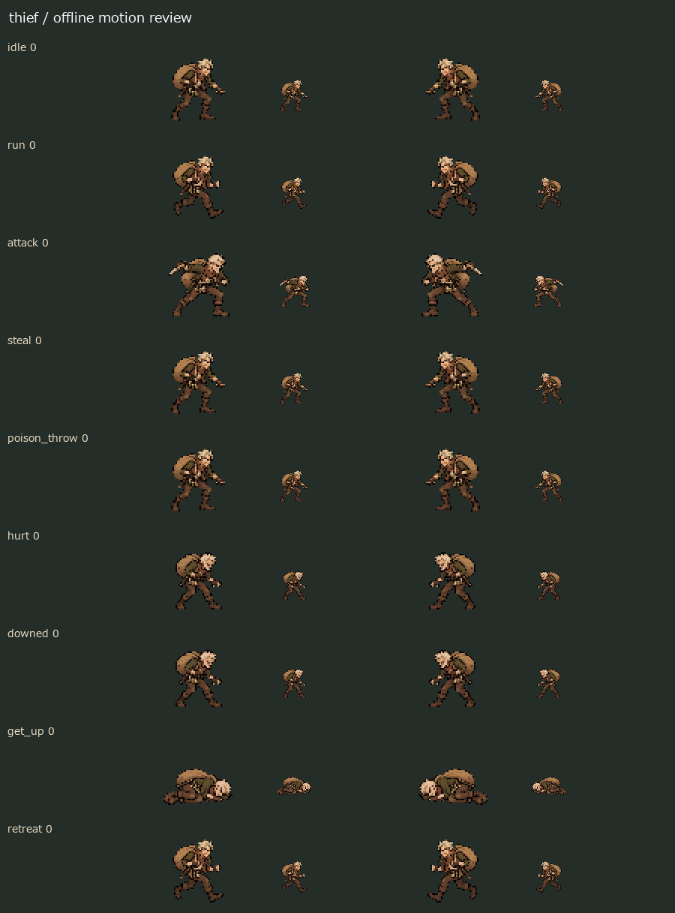
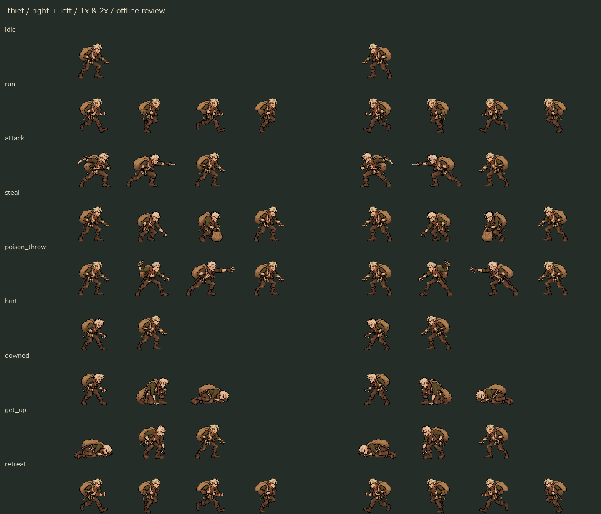
b11def1fdefdb4f5e5832f91558c8116d5379b0c
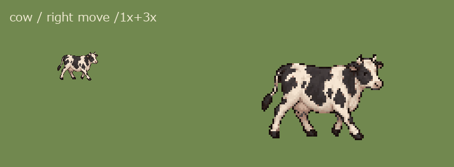
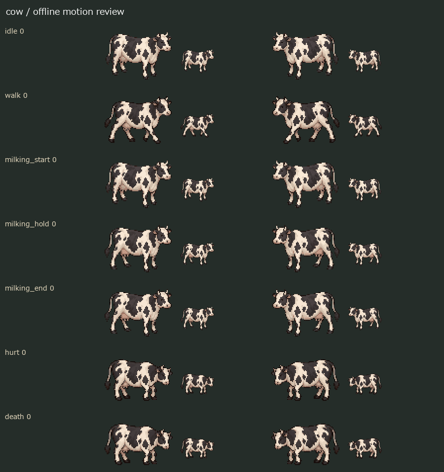
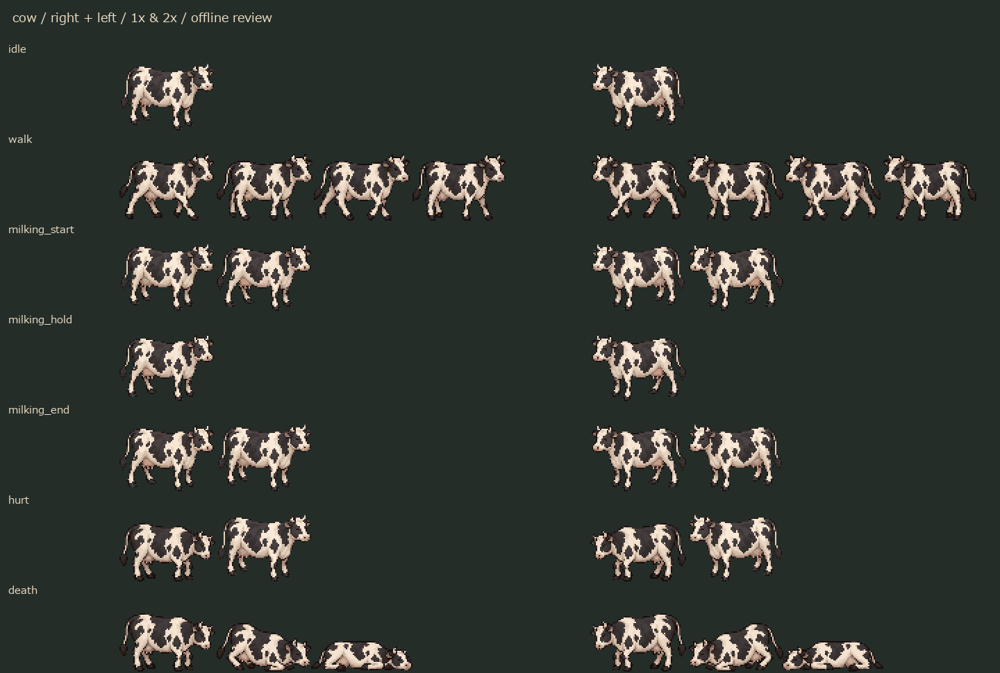
7e83f40df48d1b32b51ff1c7f37d455f5b7a3af1
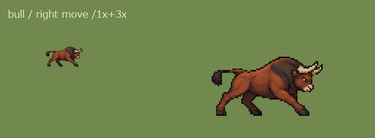
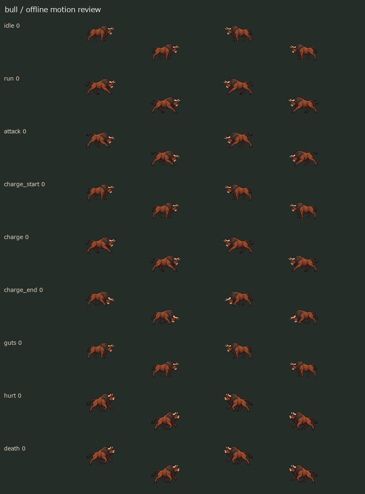
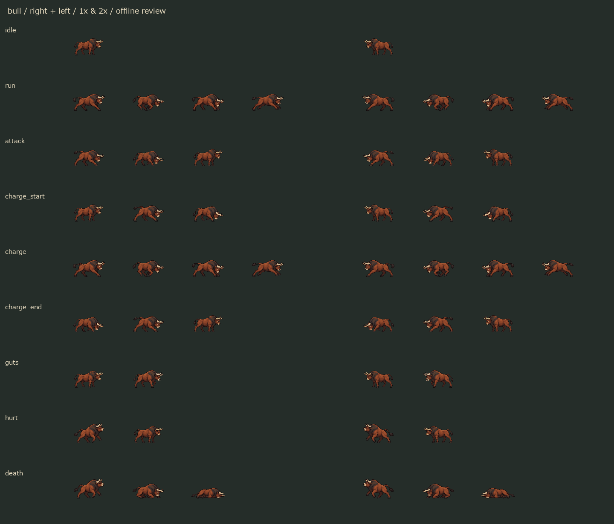
本体・演出／持ち物・合成結果。復活光は主人公を対象の例として表示。盗品は既存化石を仮配置した確認用です。
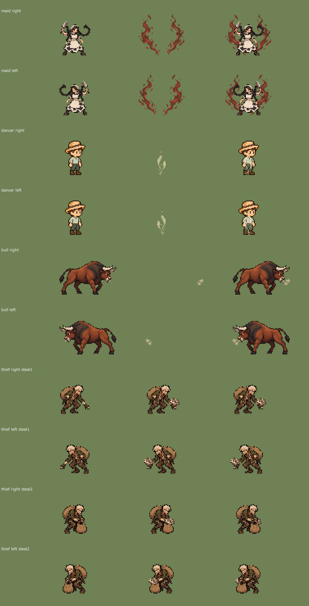